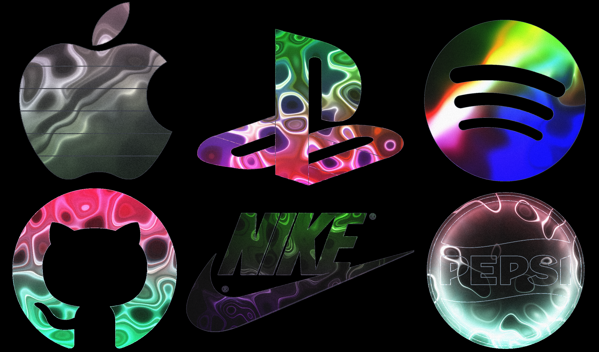

Liquid Logo
Free tool for creating animated logos
Turn your logo into a liquid metal animation! Upload a photo, then use the controls to adjust the colors, speed, noise intensity, animation pattern, and more.
Click the 🎲 button underneath the canvas to randomize all input parameters, this can give interesting colour / movement styles. You can then open the controls at the top right of the screen to fine-tune the parameters one-by-one.
This program works best with input logo images in png format, with a transparent background (or with a solid white / black color background). Consider cropping your image or running a background removal before inputting into this tool -- this might help to pick out the key edges of your image.
How this works: this tool uses WebGL shaders to create a real-time animation that moves around the edges of your logo, creating a liquid-metal aesthetic.
You can use this to create stylized animated versions of your logo.
You can export your creation as an image or video afterwards.
A few hotkeys for the pros:
- [r]: randomize all inputs (useful to find interesting parameters for a new image)
- [space]: pause/play the animation
- [v]: start and stop video export
- [s]: save a screenshot image
This tool is completely free, open source (MIT license), without any paywalls or premium options. You are welcome to use it for personal or commercial purposes.
If you found this tool useful, feel free to buy me a coffee. This would be much appreciated during late-night coding sessions!

Enormous thanks and credit to XorDev on Twitter, whose "Plasma" shader work served as a starting point for this tool.
The code used to create the animation is quite resource-intensive, so it may run with some lag if your computer doesn't have enough computing power, too many tabs open, low battery, etc.
If the video export feature does not work for you, please try a free screen-recording tool such as OBS Studio.
This project is coded using webgl shaders, vanilla Javascript, HTML5 canvas, and CSS (see github repo). Video creation and encoding is done using mp4 muxer.
I do not have access to any images that you upload here, as all processing is done "client-side" (i.e., no videos or images are saved/stored by me — they stay on your computer only).
If you enjoyed this, you may be interested in my other free / open source projects:
- Particular Drift: turn photos into flowing particle animations
- Video-to-ASCII: turn videos into ASCII pixel art
- Shape Shimmer: turn photos into funky wave animations
- Colliding Scopes: turn photos into kaleidoscope animations
- Force-Field Animation: turn photos into particle animations
- Manual Brick Breaker: play brick breaker by waving your hands around
Feel free to reach out to discuss, ask questions, or just to say hi! You can find me @stereo.drift on instagram, or through the other places below :)